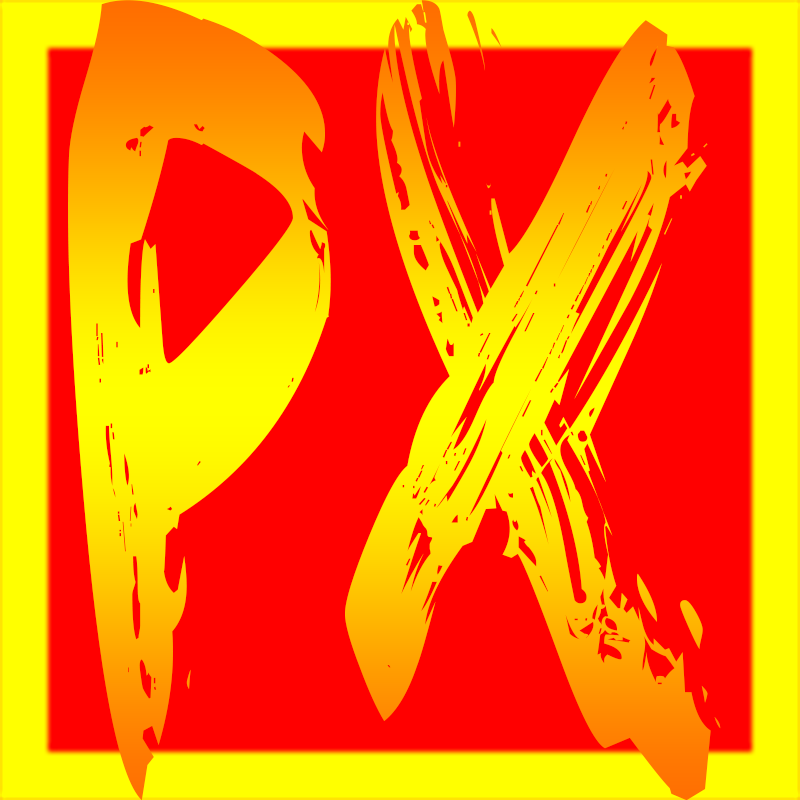

PowereXe Müzik
Beta Version 1.05
͇İ͇͇ç͇͇i͇͇n͇͇d͇͇e͇͇k͇͇i͇͇ ͇͇M͇͇ü͇͇z͇͇i͇͇ğ͇͇i͇͇ ͇͇K͇͇e͇͇ş͇͇f͇͇e͇͇t͇͇.͇.͇
[ 1.05 ]
( 10.08.2016 )
Model Grubu Artık Bizimle..
[ 1.04 ]
( 04.08.2016 )
Duman Grubu Artık Bizimle..
[ 1.03 ]
( 01.08.2016 )
Twitter butonu eklendi.
Ferman Akgül - Dırdır ft. Pascal eklendi.
[ 1.02 ]
( 24.07.2016 )
İnfo Sayfası ile PowereXeyi tanıyın. Gelişmeleri Takip Edin.
[ 1.01 ]
( 23.07.2016 )
Müziği İyice Keşfet. İndirme ve Youtube seçenekleri artık Aktif.
[ 1.00 ]
( 02.07.2016 )
PowereXe Projesinin amiral gemisi PowereXe Müzik Web Sitesi Açılmıştır.
maNga ve Seksendörtün Müzikleriyle Açılış tamamlandı.
PowereXe Nedir?
8 Ekim 2012 Tarihiyle ForumeXe'de Yayımladığım Bir Visual Studio Projesidir.Kodlama Dillerine duyduğum merakla başladım ve zamanla projeyi ve kendimi geliştirdim.Şimdi ise C# Yardımıyla HTML üzerinde çalışmalara başladım.
Sıkça Sorulan Sorular (S.S.S)
Telefonda Sıradaki Şarkıya Geçmiyor Neden?
Pil Tasarrufu Modundayken Tarayıcınız Arkaplanda çalışmayacağından PlayList pasif
hale gelir.
İstek, Şikayet ve Öneri için
fatih-yarligan@outlook.com